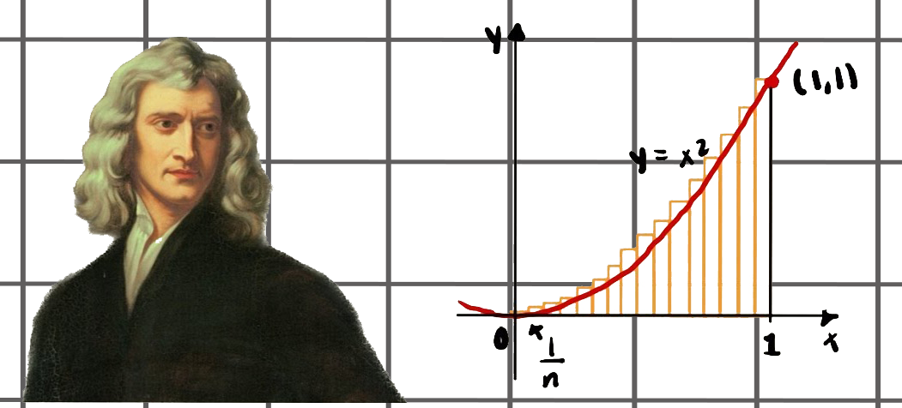

Jose Daniel Jimenez
Portafolio de Calculo Diferencial e Integral
El portafolio consiste en la recopilación de los principales conceptos trabajados cada semana y el registro de los ejercicios resueltos en clase de manera grupal. Los estudiantes deben confeccionar el portafolio con una herramienta digital y agregar en cada entrega una autoevaluación sobre su progreso en el dominio de los contenidos del curso
Calculo Diferencial
